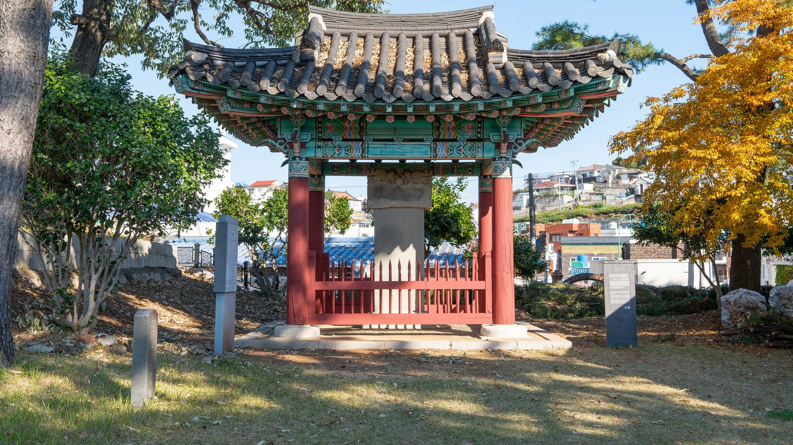

통영이라는 이름을 따라가다 보면 한때 이 땅에 자리했던 군영과 만나게 됩니다. 삼도수군통제영(三道水軍統制營). 충청도와 전라도, 경상도 세 도의 수군을 지휘하던 본영입니다. 오늘날의 도시 이름인 ‘통영’은 바로 이 통제영을 줄여 부르던 이름에서 비롯되었습니다.
통영의 역사는 바다에서 시작됩니다. 1592년 한산도 앞바다에서 조선 수군이 왜군을 상대로 승리를 거둔 이듬해, 조정은 세 도의 수군을 통합하여 지휘할 삼도수군통제사 직제를 마련했습니다. 초대 통제사는 이순신이었습니다. 그가 이끌던 한산도 진영은 최초의 통제영으로 여겨집니다.
당시 통제영은 단순히 군사들이 머무는 진영이 아니었습니다. 넓은 해역을 방어하려면 수군을 지휘하는 일과 함께 군량을 확보하고, 무기와 각종 군수품을 마련하며, 군영의 운영에 필요한 물자를 관리해야 했습니다. 전쟁을 치르는 군대에는 싸움에 필요한 무기만큼이나 먹을 것과 입을 것, 배와 장비를 관리하는 체계가 중요했습니다. 통제영의 역사는 수군의 작전뿐 아니라 그 작전을 가능하게 한 행정과 물자의 역사이기도 합니다.
한산도의 진영에서 두룡포의 군영으로
통제영이 처음부터 지금의 통영에 있었던 것은 아닙니다. 정유재란으로 한산도 진영이 폐허가 된 뒤, 통제영은 거제도 오아포와 고성현 춘원포 등 여러 곳을 거치며 자리를 옮겼습니다. 전란이 끝난 뒤에도 수군의 본영은 오랫동안 안정적으로 정착할 곳을 찾아야 했습니다.
통제영이 옮겨 온 길
한산도1593 · 최초의 통제영
거제 오아포정유재란 이후
고성 춘원포여러 곳을 거침
두룡포1603 · 지금의 통영
정유재란 이후 여러 곳을 거친 경로를 단순화했습니다.
전환점은 1603년에 찾아왔습니다. 제6대 통제사 이경준은 두룡포, 오늘날 통영시 문화동 일대에 통제영의 터를 정하고 건물을 세우기 시작했습니다. 이어 1605년에는 객사인 세병관을 비롯해 백화당과 정해정 등 주요 건물이 들어섰습니다. 군영의 중심이 두룡포에 자리 잡으면서 이 일대는 수군 지휘와 행정, 물자 관리가 한데 이루어지는 공간으로 발전했습니다.

두룡포기사비
두룡포에 들어선 통제영은 하나의 건물로 이루어진 시설이 아니었습니다. 19세기 중엽에는 세병관을 중심으로 100여 동의 관아가 자리했던 것으로 전해집니다. 군영의 지휘와 행정, 군수품과 군량의 관리, 각종 업무와 의례가 서로 연결된 복합적인 공간이었습니다. 통제영은 군사적 목적을 수행하는 동시에 많은 사람과 물자가 모이고 오가는 도시의 중심이기도 했습니다.
이처럼 큰 군영을 유지하려면 전문적인 기술을 가진 사람들이 필요했습니다. 무기를 만드는 장인, 가죽을 다루는 장인, 부채와 모자, 가구와 금속 장식을 만드는 장인들이 군영의 운영을 뒷받침했습니다. 처음에는 군사적 필요에서 출발한 제작 활동이었지만, 필요한 물건의 종류가 다양해지면서 생활용품과 임금께 올리는 진상품까지 만들어 내는 공예 생산으로 넓어졌습니다.
통제영의 성장과 함께 공예가 발달했다는 사실은 통영의 역사를 이해하는 중요한 실마리입니다. 군영은 장인들에게 물건을 만들 이유와 일감을 제공했고, 장인들은 자신이 가진 기술로 군영의 일상을 채웠습니다. 군사와 행정, 물류와 공예는 서로 떨어져 있는 분야가 아니라 한 장소를 움직이는 여러 기능이었습니다.
한 장소를 움직인 네 가지 기능
통제영
지휘삼도 수군의 작전
행정업무와 의례
물류군량·군수품 관리
공예장인과 공방
세병관 전경
292년의 시간, 그리고 남겨진 이름
통영 두룡포에 자리한 통제영은 1895년 폐영되었습니다. 1603년 현재 위치에 건립을 시작한 때부터 폐영까지, 통제영은 292년 동안 이곳의 역사와 함께했습니다. 다만 이 기간은 오늘날 통영에 자리 잡은 통제영의 역사를 기준으로 계산한 것입니다. 통제영의 제도적 시작과 한산도 진영의 역사는 그보다 앞선 1593년으로 거슬러 올라갑니다.
통제영 연표
두룡포의 292년
1592한산도 앞바다에서 조선 수군 승리
1593삼도수군통제사 직제 마련, 초대 이순신
1603제6대 이경준, 두룡포에 건립 시작
1605세병관·백화당·정해정 건립
19세기 중엽세병관 중심으로 관아 100여 동
1895통제영 폐영
2002세병관 국보 지정
통제영이 문을 닫은 뒤에도 모든 흔적이 사라진 것은 아닙니다. 일제강점기를 거치며 관아 건물 대부분이 헐렸지만, 세병관은 살아남아 옛 군영의 모습을 전하는 중요한 건축 유산이 되었습니다. 이후 통제영 터에 대한 조사와 정비, 복원 작업이 이어지면서 오늘날에는 세병관과 여러 복원 건물, 유적을 통해 통제영의 공간을 살펴볼 수 있습니다. 지금 볼 수 있는 통제영은 옛 건물과 유구, 복원한 건물이 함께 있는 역사 공간입니다.
도시의 이름은 그렇게 남았습니다. ‘통영’이라는 두 글자는 수군을 지휘하던 본영의 이름을 담고 있고, 그 이름 안에는 한산도의 진영에서 두룡포의 군영으로 이어진 시간과 그곳에서 일했던 수많은 사람들의 삶이 겹쳐 있습니다.
이제 통제영의 길을 따라 걸어 보세요. 세병관의 넓은 마루와 공방 거리의 건물들은 서로 다른 장소처럼 보이지만, 한때는 군영을 움직이는 하나의 체계 안에 있었습니다. 수군의 본영이 어떤 방식으로 운영되었는지 이해하고 나면, 그 안에서 장인들이 만들던 물건과 기술 또한 새로운 의미로 다가옵니다.
“통영이라는 이름에는 수군 본영이 자리 잡았던 시간과 그곳에서 일했던 사람들의 삶이 함께 담겨 있습니다.”